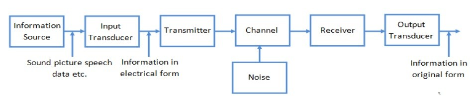
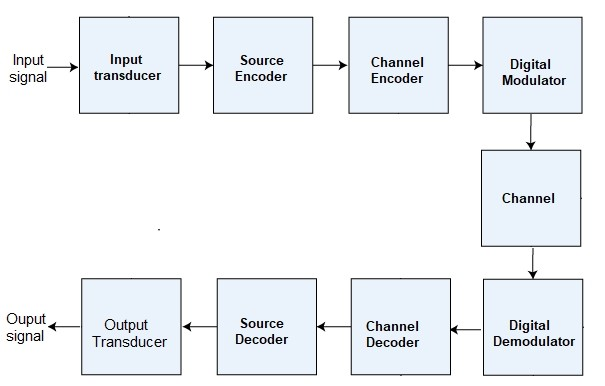

Unit 1 - Introduction
1.1. Definition, Advantages and disadvantages, applications
Computer network
A interconnection of multiple autonomous computers which are able to
exchange the information between each other is called a computer network.
If one computer can forcibly start, stop and control another one, the computers are not autonomous.
If one computer can forcibly start, stop and control another one, the computers are not autonomous.
Advantages
- Ease of accessibility: Modern computer networks are simple to use thus a new user to technology will also find it simple to connect.
- Flexibility: Flexibility means that various people will be able to explore different things depending on their needs. Computer networks offer a variety of options for sharing a specific piece of information for this purpose. For example, e-mail or messaging, etc.
- Convenient resource sharing: Common resources like printers, scanners, and fax machines can be easily shared among multiple devices using network.
- Connectivity: Computer Networks improve connectivity irrespective of a person’s location.
- Security: Computer networks provide security through authorization. Authorization is done via user id and password.
- Great storage capacity: A central server can be used to store data for all computers in the computer network. So, if in case one loses the data, others have it.
- Internet of Things (IoT): IoT devices rely on computer networks to communicate and share data with other devices and systems, which can enable automation and improve efficiency in various industries.
Disadvantages
- Security risks: Networks can be vulnerable to security breaches, including hacking, viruses, and other malware. This can lead to data theft, system damage, and other security issues.
- Rise in Complexity: Computer networks can be complex and require specialized technical expertise to set up and maintain.
- Cost: Setting up and maintaining a computer network can be expensive, especially for larger organizations that require more advanced networking equipment and software.
- Maintenance and management: Networks require ongoing maintenance and management, including monitoring and troubleshooting issues that may arise.
- Network congestion: Networks can become congested with too much traffic, leading to slow performance and decreased productivity.
- Limited privacy: Networks can make it easier for others to access your data and communications, reducing privacy and confidentiality.
Applications of computer networks
- Resource Sharing
Computer network can be used for resource sharing. Hardware and Software can be shared among multiple users. - Information Sharing
Using a Computer network, we can share Information over the network. Over the network, a single information can be shared among the many users over the internet. - Communication
Communication includes email, calls, message broadcast, electronic funds transfer system etc. Can be held among many computers using computer network. - Entertainment Industry
Entertainment industry also uses computer networks widely such as Multiperson real-time simulation games, movie/TV programs, etc. - Access to Remote Database
Computer networks allow us to access the Remote Database of the various applications by the end-users. Some applications are Reservation for Hotels, Airplane Booking, Home Banking, Automated Newspaper, Automated Library etc. - Home applications
There are many common uses of the computer network are as home applications. For example, you can consider user-to-user communication, access to remote instruction, electronic commerce, and entertainment. Another way is managing bank accounts, transferring money to some other banks, paying bills electronically. A computer network arranges a robust connection mechanism between users. - Business application
Many business use computer network for resource and data sharing. Additionally, many business companies are doing business electronically with other companies and clients worldwide with the help of a computer network - Mobile users
Mobile users/device are portable device like smartwatches, wearable devices, tablets, online transactions, purchasing or selling products online, etc uses computer network. - Social media
Social media is also a great example of a computer network application. It helps people to share and receive any information related to political, ethical, and social issues.
Some network terminologies
- Data rate
The rate at which bits are transmitted. Data rate can vary with time. - Throughput
It is the overall effective transmission rate, taking into account things like transmission overhead, protocol inefficiencies and perhaps even competing traffic. - Bandwidth
In computer networking, the term bandwidth refers to as the measure of the capacity of a medium to transmit data.
Bandwidth can be used to refer to either data rate or throughput, though we here use it mostly as a synonym for data rate.
1.2. Communication system: Analog and digital, Block diagram
Signals
signal is an electromagnetic wave that carries information from one
place to another, using a specific propagation medium, such as air, vacuum, water, and solid.
signals are categorized into two types:
Analog signal
Continuous signal which changes with time is called analog signal.
Digital signal
Signal represented in the form of discrete/fixed set of values is known as digital signal. It is transmitted in the form of bits.
Data communication
Data communication is the process of exchanging data between two or more devices (sender to receiver) through a transmission medium.
Analog signal
Continuous signal which changes with time is called analog signal.
Digital signal
Signal represented in the form of discrete/fixed set of values is known as digital signal. It is transmitted in the form of bits.
Data communication
Data communication is the process of exchanging data between two or more devices (sender to receiver) through a transmission medium.

Fig: Figure of Analog and Digital Signal
Communication System
Communication system is defined as a system consisting mainly of
transmitter, channel and receiver used in transmission of information from one point to another.
There are two types of communication systems based on the type of signal they handles:
There are two types of communication systems based on the type of signal they handles:
- Analog Communication System
- Digital Communication System
Analog Communication System
It uses analog signals for transmitting data from transmitter to the
receiver.

Fig: block diagram of communication system
# Information source
It is the source that produces an information which needs to be communicated. Eg person speaking, weather devices reading the temperature, pressure, etc.
It is the source that produces an information which needs to be communicated. Eg person speaking, weather devices reading the temperature, pressure, etc.
# Input transducer
It is a device that converts information from source which is in non-electric form such as text, image, sound, video, etc into electric form. Eg microphone, camera, keyboard, etc. However, sometimes digital data which are already in electronic form eg data stored in memory, needs no further conversion.
It is a device that converts information from source which is in non-electric form such as text, image, sound, video, etc into electric form. Eg microphone, camera, keyboard, etc. However, sometimes digital data which are already in electronic form eg data stored in memory, needs no further conversion.
# Transmitter
It converts the electric message signal into signal suitable for channel transmission. It may include sub-components such as modulator, amplifier, encoders, antenna etc.
The original message signal usually modulates a higher-frequency carrier sine wave generated by the transmitter, and the combination is raised in amplitude by power amplifiers, resulting in a signal that is compatible with the selected transmission channel.
It converts the electric message signal into signal suitable for channel transmission. It may include sub-components such as modulator, amplifier, encoders, antenna etc.
The original message signal usually modulates a higher-frequency carrier sine wave generated by the transmitter, and the combination is raised in amplitude by power amplifiers, resulting in a signal that is compatible with the selected transmission channel.
# Channel
It is the medium used to transfer the signal from transmitter to receiver. Eg wirelines, optical fibre, free space or air itself. Here the signal may be subjected to external noise and internal distortion which cause deterioration of signal.
It is the medium used to transfer the signal from transmitter to receiver. Eg wirelines, optical fibre, free space or air itself. Here the signal may be subjected to external noise and internal distortion which cause deterioration of signal.
# Receiver
It converts received signal from channel into estimate of originally sent message signal in electric form. It may include demodulator, decoders, antenna, amplifier.
It converts received signal from channel into estimate of originally sent message signal in electric form. It may include demodulator, decoders, antenna, amplifier.
# Output transducer
It is a device that convert the electric estimated message signal into original message such as sound, image, text, video etc. for eg. Monitor, speaker, etc Noise is undesirable electric or electromagnetic signal that enters communication system and affect the signal transmitted. There are external and internal sources that cause noise.
It is a device that convert the electric estimated message signal into original message such as sound, image, text, video etc. for eg. Monitor, speaker, etc Noise is undesirable electric or electromagnetic signal that enters communication system and affect the signal transmitted. There are external and internal sources that cause noise.
Digital Communication System
It is a communication system which uses digital signal for data
transmission between sender and receiver.

Fig: Digital Communication
# Source signal
The source signal is an analog or digital signal.eg Sound signal, data from a computer, etc which is inputted to the digital communication system.
The source signal is an analog or digital signal.eg Sound signal, data from a computer, etc which is inputted to the digital communication system.
# Input Transducer
This is a transducer which converts original input signal to an electrical signal (eg microphone). This block also consists of an analog to digital converter as digital signal is needed for further processing. A digital signal is generally represented by a binary sequence.
This is a transducer which converts original input signal to an electrical signal (eg microphone). This block also consists of an analog to digital converter as digital signal is needed for further processing. A digital signal is generally represented by a binary sequence.
# Source Encoder
The source encoder compresses the data into minimum number of bits. This process helps in effective utilization of the bandwidth. It removes the redundant bits unnecessary excess bits. It produces source code signal.
The source encoder compresses the data into minimum number of bits. This process helps in effective utilization of the bandwidth. It removes the redundant bits unnecessary excess bits. It produces source code signal.
# Channel Encoder
The channel encoder helps in error detection and correction by adding some error correcting redundant bits, in controlled manner to the transmitted data. This is done because during data transmission due to noise, the signal may get altered.
The channel encoder helps in error detection and correction by adding some error correcting redundant bits, in controlled manner to the transmitted data. This is done because during data transmission due to noise, the signal may get altered.
# Digital Modulator
The signal to be transmitted is modulated here by a carrier.
The signal to be transmitted is modulated here by a carrier.
# Channel
The channel or a medium, allows the signal to transmit from the transmitter end to the receiver end.
The channel or a medium, allows the signal to transmit from the transmitter end to the receiver end.
# Digital Demodulator
This is the first step at the receiver end. The received signal is demodulated and the source signal is recovered from the carrier signal.
This is the first step at the receiver end. The received signal is demodulated and the source signal is recovered from the carrier signal.
# Channel Decoder
The channel decoder, after detecting the sequence, does some error corrections. The distortions/error which occurs during the transmission, damage/change the digital signal bits. Redundant bits added at channel encoder is used are detect and correct such errors thus helping in the complete recovery of the original signal.
The channel decoder, after detecting the sequence, does some error corrections. The distortions/error which occurs during the transmission, damage/change the digital signal bits. Redundant bits added at channel encoder is used are detect and correct such errors thus helping in the complete recovery of the original signal.
# Source Decoder
From the knowledge of the source encoding method used, it attempts to reconstruct the original signal from the source without the loss of information. The source decoder recreates approximation of original source output.
From the knowledge of the source encoding method used, it attempts to reconstruct the original signal from the source without the loss of information. The source decoder recreates approximation of original source output.
# Output Transducer
If the original information source was not in digital data form the D/A converter is used. The output transducer then converts the signal into the original physical form eg. discrete form like keyboard characters or analog form like speech signal.
If the original information source was not in digital data form the D/A converter is used. The output transducer then converts the signal into the original physical form eg. discrete form like keyboard characters or analog form like speech signal.
# Output Signal
This is the output which is produced after the whole process. Example - The sound signal received or keyboard character displayed, etc.
This is the output which is produced after the whole process. Example - The sound signal received or keyboard character displayed, etc.
1.3. Network as platform, Internet architecture, Trends in networking
Network as platform
"Network as a platform" refers to the concept of viewing a computer
network not just as a means of connecting devices, but as a foundation upon which applications
and services can be delivered and accessed. In this model, the network provides a set of
capabilities and services that applications can leverage, such as data storage, processing, and
communication.
This approach emphasizes the network's role in enabling and supporting various applications and services, often through the use of APIs (Application Programming Interfaces) and other tools that allow developers to build on top of the network infrastructure. By treating the network as a platform, organizations can create more flexible, scalable, and responsive systems that can adapt to changing requirements and support a wide range of applications and services.
This approach emphasizes the network's role in enabling and supporting various applications and services, often through the use of APIs (Application Programming Interfaces) and other tools that allow developers to build on top of the network infrastructure. By treating the network as a platform, organizations can create more flexible, scalable, and responsive systems that can adapt to changing requirements and support a wide range of applications and services.
Internet architecture
Internet is a meta-network, which refers to a congregation of thousands
of distinct networks interacting with a common protocol. In simple terms, it is referred as an
internetwork that is connected using protocols. Protocol used is TCP/IP. This protocol connects
any two networks that differ in hardware, software and design.
TCP/IP provides end to end transmission, i.e., each and every node on one network has the
ability to communicate with any other node on the network.
Internet architecture consists of three layers -
- Application protocol layer
- Transmission control protocol
- Internet protocol
The IP layer ensures the data gets to the right place, the TCP layer
ensures the data is correct and in order, and the Application Protocol layer allows users to
access and use the internet in a meaningful way.
Trends in networking
Trends in networking refer to the emerging new developments and uses of networking technologies,
practices, and architectures that are shaping the future of networking.
Some examples are as follow:
- 5G Technology: 5G promises faster speeds, lower latency, and increased network capacity, enabling new applications such as IoT, autonomous vehicles, and augmented reality.
- Internet of Things (IoT): The proliferation of IoT devices is driving the need for networks that can support a massive number of connected devices and handle the data they generate.
- Artificial Intelligence (AI) and Machine Learning (ML): AI and ML are being used to optimize network performance, improve security, and automate network management tasks.
- Security: With the increasing number of cyber threats, network security is becoming more important. Trends include the adoption of zero-trust security models and the use of AI for threat detection and response.
- Cloud Networking: The rise of cloud computing is driving the need for networks that can efficiently connect users to cloud services and support the migration of applications and data to the cloud.
1.4. Data Transmission: Analog and digital transmission
Data transmission
Data transmission refers to the process of sending and receiving data
between two or more devices or systems. The underlying principle of data transmission involves
converting data into a suitable format for transmitting it over a specific medium.
Data transmission can be categorized into two main types: analog and digital.
Analog Transmission
Analog transmission involves the continuous transmission of analog data
signals through analog channels, such as telephone lines, copper wires, radio waves, etc. This
method converts the information into analog signals.
Analog transmission is simple and can transmit data over long distances but it is susceptible to interference and distortion, resulting in a loss of quality and accuracy.
Analog transmission is simple and can transmit data over long distances but it is susceptible to interference and distortion, resulting in a loss of quality and accuracy.
Digital Transmission
Digital transmission involves the encoding of data in discrete, binary
form, represented by ones and zeros to transmit data. This process breaks down the data into
individual bits and transmits them sequentially over a communication channel. This method is
more accurate and reliable than analog transmission. Digital signals are less prone to
interference, ensuring data integrity during transmission. However, digital transmission
requires the conversion of analog signals into digital formats, which may require additional
equipment and processing. Digital transmission methods can further be divided into two
categories: Parallel and serial transmission.
1.5. Transmission impairment
Transmission impairment refers to any degradation or distortion of a
signal as it travels over a communication channel. This degradation can be caused by various
factors, including attenuation, noise, distortion, and interference.
Attenuation: Attenuation is the loss of signal
strength as it travels through a medium, such as a cable or fiber optic. This can result in a
weaker signal at the receiver end, leading to errors or loss of data.
Noise: Noise is any unwanted signal that interferes
with the transmission of the desired signal. It can be caused by electromagnetic interference
(EMI), radio frequency interference (RFI), or crosstalk from other nearby signals.
Distortion: Distortion occurs when the shape of the
signal waveform is altered during transmission. This can be caused by factors such as
frequency-dependent attenuation, dispersion, or non-linearities in the transmission medium.
Interference: Interference occurs when external
signals disrupt the transmission of the desired signal. This can be intentional, such as in the
case of jamming, or unintentional, such as from nearby electronic devices.
By: Subodh Neupane, Ganesh Rawat